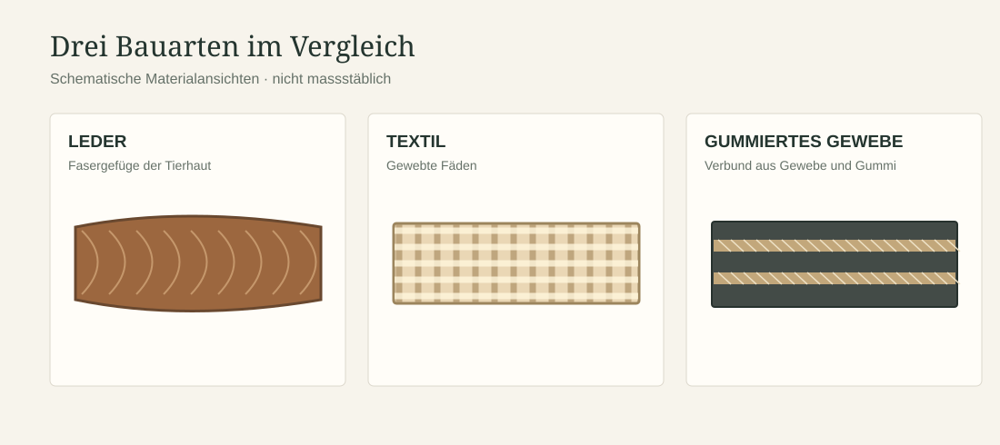

Leder war ein wichtiger, aber nicht der einzige Werkstoff für Treibriemen. Die Eignung eines Riemens hängt von der konkreten Maschine und ihren Betriebsbedingungen ab.
Materialien im Vergleich
Leder
Traditionelles Riemenmaterial; Verbindung und Pflege sind Teil der technischen Praxis.
Gewebe
Textile Riemen wurden je nach Aufbau und Einsatzbereich verwendet.
Gummierte Gewebe
Mehrschichtige Riemen mit anderen Reib- und Dehnungseigenschaften.
Verbundriemen
Moderne Zugträger können mit unterschiedlichen Reibschichten kombiniert werden, teilweise auch mit Leder.

Keine pauschale Rangfolge
Ein Riemen muss zu Geschwindigkeit, Scheibendurchmesser, Umgebung, Belastung und Wartung passen. Aussagen wie „Leder ist immer besser“ oder „Kunststoff ist grundsätzlich wartungsfrei“ sind zu allgemein.
Bezug zu Krafft
Die Krafft-Quellen belegen verschiedene Leder- und Riemenprodukte. Ein allgemeiner Materialvergleich ist deshalb sinnvoll, darf aber nicht als vollständige Liste der bei Krafft hergestellten Riemenmaterialien gelesen werden.